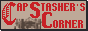
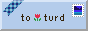
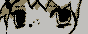
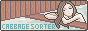
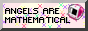
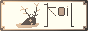
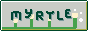
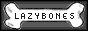
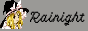

Links
I don't update this very often, so some links may be dead. These are sites I find interesting for one reason or
another.
I've increased the display sizing of these slightly.

Buttons

capstasher
One of the first real friends I made on Neocities. Cap's site has a lovely, unique style with beautiful
graphics and a
refreshing focus on literature and archival.

turd
One of the first sites I found on Neocities. Charming log entries, wistful feelings, and as a bonus: cute
cat
photos.
 saint-images
Dreamy photography that makes me feel sort of nostalgic for things I have never even experienced. Stumbling
across this site helped inspire me to
try photography myself, too.
didn't ask
Reading the articles here usually makes me laugh quite a lot. Also a fellow Christian and C.S. Lewis fan. :]
saint-images
Dreamy photography that makes me feel sort of nostalgic for things I have never even experienced. Stumbling
across this site helped inspire me to
try photography myself, too.
didn't ask
Reading the articles here usually makes me laugh quite a lot. Also a fellow Christian and C.S. Lewis fan. :]

i will never be happy
Fellow theology and FOSS fan. I really enjoy the art, symbolism, and the simplicity of this site.
 bonnibel's graphic collection
A cute collection of graphics. A lot of the little pixel graphics around my site came from here.
bonnibel's graphic collection
A cute collection of graphics. A lot of the little pixel graphics around my site came from here.

cabbage sorter
I really enjoy her layout and her reviews. She reviews many of my favorite shows and books, including niche
ones, which always makes me happy to see.

angels are mathematical
I really enjoy Sonya's art, and reading her blog posts is always a pleasure.


myrtletribe
I really enjoy the art on this site, and the book reviews especially. The layout is also refreshingly
minimalistic and easy to navigate, which I appreciate a lot.



rainight
I enjoy reading the writing on philosophy here.
Other Sites
colexdev: Another great example of
digital minimalism, with a focus on nutrition, literature, philosophy, and lots of other great things.
mental labour: Philosophy,
philosophy, philosophy. Brilliant, and a simple layout.
My Button
Feel free to add my button to your site, if you would like to. It took me years to finally get around to making
one...